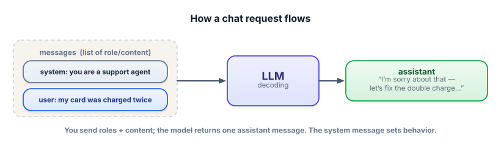
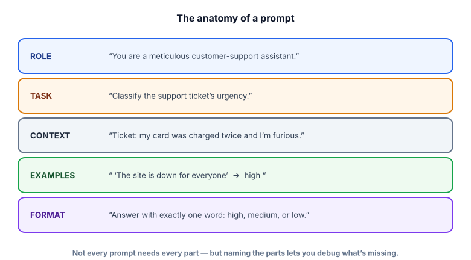

The anatomy of a prompt
Prompting is the cheapest, fastest way to change what a model does — no training, no infrastructure, just words. Before you reach for RAG or fine-tuning, a well-built prompt solves a surprising fraction of problems. This lesson gives you the parts and the principles.
Why prompt engineering is the first tool you reach for
You now know the engine predicts plausible next tokens conditioned on its input. The input is your control surface. Prompt engineering is the practice of designing that input so the model reliably produces what you want. It’s effectively programming in plain language: vague instructions give vague, inconsistent results; precise ones give precise, repeatable results. And it’s free and instant to iterate on, which is exactly why it’s the first thing to try.
A prompt is everything you feed the model for one request. In chat models it’s usually structured as a list of messages, each with a role: the system message sets overall behavior and persona, user messages are the human’s turns, and assistant messages are the model’s replies. The model reads them all and produces the next assistant message.

The parts of a well-built prompt
A strong prompt is usually assembled from a few recognizable parts. You won’t always use all of them, but knowing them turns prompt-writing from guesswork into engineering — when output is wrong, you can ask “which part is missing or weak?”

- Be specific. Specificity narrows the model’s probability distribution toward what you want. “Summarize in 3 bullet points for a busy executive” beats “summarize.”
- Give a role. “You are a senior security reviewer” shifts vocabulary, depth, and priorities.
- Show the output format. State it exactly — “Reply with only valid JSON matching this shape” — and the model conforms far more reliably.
- Provide the context. Don’t rely on memory; paste the ticket, the doc, the data. (When it’s too big, that’s RAG — Track 3.)
- Give it an out. “If the answer isn’t in the context, say ‘I don’t know.’” This single line prevents a lot of hallucination.
Build a prompt, part by part
Edit any field below and watch the final prompt assemble. This is exactly the mental model to keep: a prompt is parts you compose deliberately, not a magic incantation.
Prompt builder
Tweak the parts; the assembled prompt updates live. Try deleting the Format line and notice how much vaguer the instruction becomes.
A reusable helper (free, local)
For the rest of Track 2 you’ll want to actually run prompts. We’ll use Ollama — the free, local, open-source runtime from your setup lesson — so there’s no API key and no cost. Install Ollama from ollama.com, then in a terminal run ollama pull llama3.2 once. Here’s the tiny helper we’ll reuse:
!pip install ollama
import ollama
def ask(user, system=None, temperature=0):
"""Send a prompt to a free local model and return its text reply."""
messages = []
if system:
messages.append({"role": "system", "content": system})
messages.append({"role": "user", "content": user})
resp = ollama.chat(model="llama3.2", messages=messages,
options={"temperature": temperature})
return resp["message"]["content"]No local machine handy? You can also run these prompts in free Colab with a small instruction model (e.g. google/flan-t5-base via transformers). The prompt text — the part that matters — is identical across models.
Same task, same model, two prompts. Watch the reliability jump.
# WEAK: vague task, no role, no format → inconsistent, chatty answers
print(ask("is this ticket urgent? My card was charged twice and no one replied in 3 days."))
# e.g. "It does sound quite urgent! You may want to... (3 paragraphs)"
# ENGINEERED: role + task + context + explicit format + an out
system = "You are a meticulous customer-support triage assistant."
user = """Classify the support ticket's urgency.
Ticket: "My card was charged twice and no one has replied in 3 days."
Answer with exactly one word: high, medium, or low. If unclear, answer medium."""
print(ask(user, system=system)) # -> "high"The weak prompt makes the model guess what you want and how to format it — so you get a different shape every run. The engineered prompt removes the guesswork: a role to set stance, the context inline, an exact output format, and a fallback. That’s the whole game in miniature — and it’s why temperature=0 plus a tight format is the backbone of reliable features.
Put durable behavior in the system message: persona, rules, output format, tone, “always answer only from context.” Put the specific request and data in the user message. A good rule: if it should apply to every turn, it’s system; if it’s about this one request, it’s user. Keeping them separated makes prompts far easier to maintain and reuse.
- Prompt engineering is programming in plain language — your input is the model’s entire control surface.
- Chat prompts are messages with roles: system (behavior), user (request), assistant (reply).
- Strong prompts compose recognizable parts: role, task, context, examples, format (+ constraints and an out).
- Specificity narrows the distribution: say the role, the format, and the fallback explicitly.
- Durable rules → system message; this-request details → user message.
Your summarizer sometimes returns 1 sentence, sometimes 6 paragraphs, sometimes a bulleted list — for the same kind of input. What’s the highest-leverage fix?
Which prompt component is what stops the model from inventing an answer when it shouldn't?
1. Take this weak prompt and rebuild it using the five parts: “tell me about this customer review.” (Assume you want sentiment + a one-line reason, for a dashboard.)
2. Decide for each: system or user message? (a) “Always respond in formal British English.” (b) “Summarize the email below.” (c) “Never reveal internal pricing.” (d) “Here is today’s ticket: …”
3. Explain why “be specific” works, in terms of the next-token distribution from Track 1.
▸ Show solutions & reasoning
1. One good rebuild:
system = "You are a precise product-review analyst." # ROLE
user = """Classify the sentiment of the review and give a one-line reason. # TASK
Review: "Arrived late and the box was crushed, but the blender works great." # CONTEXT
Respond as: sentiment (positive/negative/mixed) — reason (≤12 words).""" # FORMATNow the output is predictable enough to drop straight into a dashboard. (Adding a labeled example would make it bulletproof — that’s Lesson 2.2.)
2. (a) system — durable style rule. (b) user — this specific request. (c) system — a standing guardrail. (d) user — the data for this turn. The test: “every turn” → system; “this turn” → user.
3. The model outputs a probability distribution over next tokens conditioned on your prompt. Vague input is consistent with many continuations, so probability is spread across wildly different outputs (short, long, listy, prose). Specific input is consistent with far fewer continuations, concentrating probability on the shape you asked for. “Be specific” literally sharpens the distribution toward your intent — same mechanism as Track 1, used deliberately.
Treat a production prompt like a small specification document, not a sentence. The best ones read like clear instructions to a competent new hire: who you are, exactly what to do, the material to use, what “done” looks like, and what to do in edge cases. When something goes wrong, you don’t randomly reword — you diagnose which part of the spec failed. Wrong format? Tighten the format line. Hallucinated facts? Add context and an “only from context” rule. Inconsistent tone? Strengthen the role.
And crucially, prompts are iterated. Nobody writes the perfect prompt first try. The professional loop is: draft → run on several real, varied inputs → notice failure patterns → adjust the relevant part → repeat. This is why Track 6 (evals) matters so much: once you can measure a prompt’s quality across a set of examples, prompt engineering stops being vibes and becomes real engineering. For now, build the habit of testing every prompt on at least 3–5 different inputs before trusting it.
You can assemble a solid prompt now. The single most powerful upgrade to most prompts is showing the model examples of exactly what you want — that’s few-shot prompting, next.